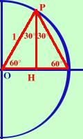

|
 Consideriamo l'angolo di 60 gradi ed il triangolo delle proiezioni OPH: se lo ribalto attorno all'altezza OH ottengo un triangolo equilatero ha un angolo di 60° e gli altri due uguali perche' avendo per lati due raggi e' isoscele Essendo il lato OH del triangolo uguale alla meta' del raggio (cerchio trigonometrico) OH = cos 60° sara' 1/2, quindi
PH2 + OH2 = OP2 Ricavo PH PH2 = OP2 - OH2 PH = Non ho messo piu' o meno davanti alla radice perche' siamo nel primo quadrante e il seno e' positivo quindi:
Per trovare la tangente faccio seno fratto coseno calcoli
Potevamo trovare i valori per l'angolo di 60° semplicemente scambiando i valori dell'angolo di 30°, perche' angoli complementari quindi sen 60° = cos 30° cos 60° = sen 30° ma vuoi mettere la differenza fra il ricavarlo cosi' o il ricavarlo con una bella dimostrazione geometrica! |

|

|

|

|